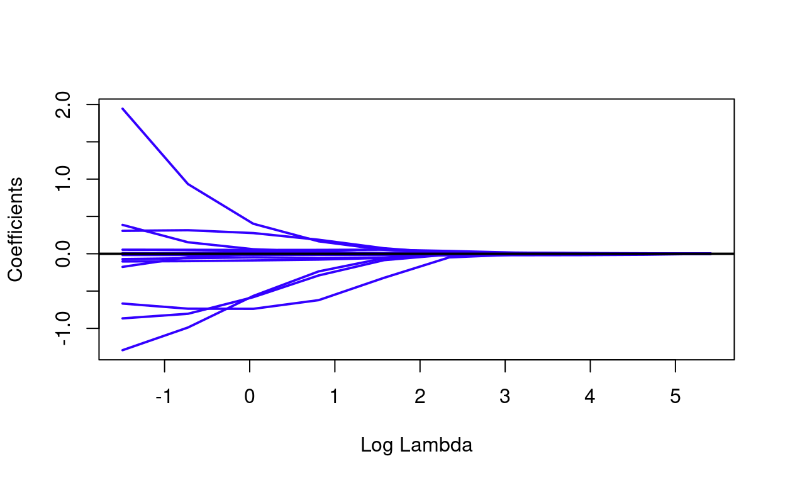
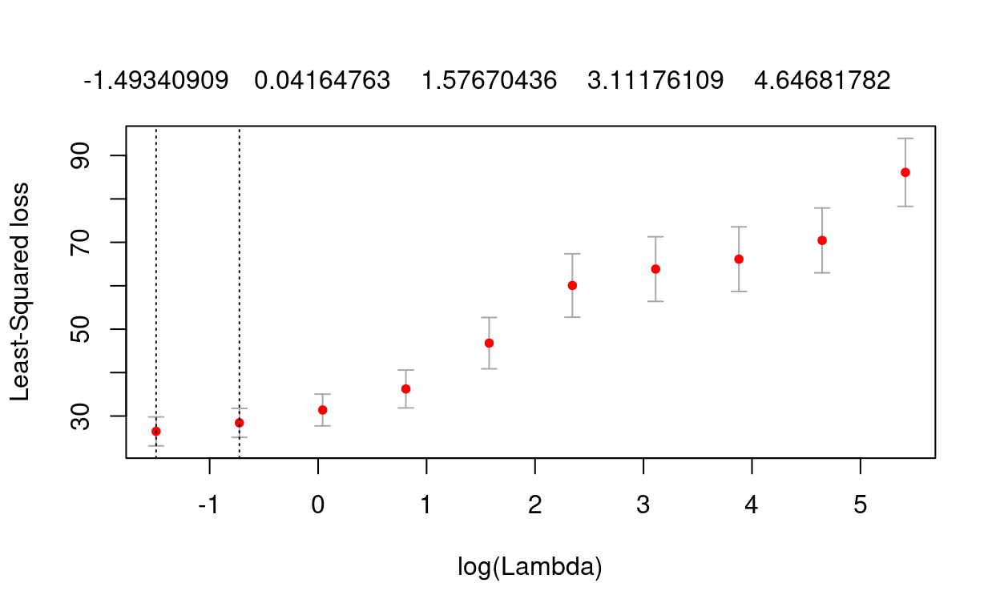

library(foreach)
library(mlbench)
library(caret)
library(glmnet)
library(gglasso)In this notebook, we use the Boston Housing data set. “This dataset contains information collected by the U.S Census Service concerning housing in the area of Boston Mass. It was obtained from the StatLib archive (http://lib.stat.cmu.edu/datasets/boston), and has been used extensively throughout the literature to benchmark algorithms.”
Source: https://www.cs.toronto.edu/~delve/data/boston/bostonDetail.html
data(BostonHousing2)
head(BostonHousing2)names(BostonHousing2)## [1] "town" "tract" "lon" "lat" "medv" "cmedv" "crim"
## [8] "zn" "indus" "chas" "nox" "rm" "age" "dis"
## [15] "rad" "tax" "ptratio" "b" "lstat"Since we want to compare the performance of some regularized models at the end of the modeling process, we first split the data into a training and a test part. This can be done by random sampling with sample.
set.seed(8593)
train <- sample(1:nrow(BostonHousing2), 0.8*nrow(BostonHousing2))
boston_train <- BostonHousing2[train,]
boston_test <- BostonHousing2[-train,]A quick look on our outcome variable for the next sections, which is the Median value of owner-occupied homes in $1000’s.
summary(boston_train$medv)## Min. 1st Qu. Median Mean 3rd Qu. Max.
## 5.00 17.10 21.40 22.89 26.25 50.00summary(boston_test$medv)## Min. 1st Qu. Median Mean 3rd Qu. Max.
## 5.00 16.50 20.10 21.11 23.77 50.00Now we can prepare our training data for the regularized regression models. The glmnet package needs models to be fitted on an X matrix and an y vector, which we need to generate first.
X <- model.matrix(medv ~ . - town - tract - cmedv,
boston_train)[,-1]
y <- boston_train$medvIn addition to ridge regression and the lasso, the elastic net can be used as a compromise between the former approaches. Here we build a small tuning loop that estimates series of regularized models for three settings of the mixing parameter alpha.
a <- c(0.1, 0.5, 0.9)
m1_cv <- foreach(i = a, .combine = rbind) %do% {
cv <- cv.glmnet(X, y, alpha = i)
data.frame(cvm = cv$cvm, lambda = cv$lambda, lambda.min = cv$lambda.min, alpha = i)
}
head(m1_cv)Based on the former CV loop we select the lambda and alpha constellation that is associated with the smallest CV error.
b1_cv <- m1_cv[m1_cv$cvm == min(m1_cv$cvm),]
m1 <- glmnet(X, y, lambda = b1_cv$lambda, alpha = b1_cv$alpha)
coef(m1)## 16 x 1 sparse Matrix of class "dgCMatrix"
## s0
## (Intercept) -3.732429e+02
## lon -3.423549e+00
## lat 3.864709e+00
## crim -1.014115e-01
## zn 3.968064e-02
## indus -7.425631e-05
## chas1 2.252981e+00
## nox -1.616388e+01
## rm 4.304516e+00
## age -8.314217e-03
## dis -1.509696e+00
## rad 2.471068e-01
## tax -1.105398e-02
## ptratio -9.534987e-01
## b 8.451085e-03
## lstat -4.588219e-01Finally, we investigate the performance of our models in the test set. For this task, we construct an X matrix from the test set.
Xt <- model.matrix(medv ~ . - town - tract - cmedv,
boston_test)[,-1]This matrix can be used in the predict function, along with the respective model that should be used for prediction.
p_net <- predict(m1, newx = Xt)As a last step, let’s look at the test set performance of our model.
postResample(p_net, boston_test$medv)## RMSE Rsquared MAE
## 4.5473212 0.7223434 3.2898066In order to run Group Lasso with gglasso, the feature groups have to be specified. Here we only consider two groups that differentiate between location (lon, lat) and all other variables.
groups <- c(1,1,2,2,2,2,2,2,2,2,2,2,2,2,2)The groups object can be passed onto gglasso, along with the X matrix and the y vector. To keep things simple, we request that only 10 lambda values should be considered.
m2 <- gglasso(X, y,
group = groups,
loss = 'ls',
nlambda = 10,
eps = 1e-04)The lambda values and coefficient paths can be listed (plotted) by simply calling (plotting) the results object.
m2##
## Call: gglasso(x = X, y = y, group = groups, loss = "ls", nlambda = 10, eps = 1e-04)
##
## Df Lambda
## s0 0 224.6000
## s1 13 104.3000
## s2 13 48.3900
## s3 13 22.4600
## s4 13 10.4300
## s5 13 4.8390
## s6 13 2.2460
## s7 13 1.0430
## s8 13 0.4839
## s9 13 0.2246plot(m2)
The set of coefficients for specific lambda values are in m2$beta.
m2$beta[,10]## lon lat crim zn indus chas1
## 0.000000000 0.000000000 -0.103311980 0.054042638 -0.071503099 0.386679116
## nox rm age dis rad tax
## -0.175992759 1.943904324 -0.002572343 -1.292021170 0.306791035 -0.016393218
## ptratio b lstat
## -0.865834228 0.008347154 -0.667332295m2$beta[,5]## lon lat crim zn indus
## 0.0000000000 0.0000000000 -0.0118729033 0.0367841395 -0.0119060400
## chas1 nox rm age dis
## 0.0006271989 -0.0001038341 0.0064394676 -0.0219291609 -0.0039321927
## rad tax ptratio b lstat
## 0.0075663394 -0.0177542709 -0.0098060916 0.0128498219 -0.0484268759m2$beta[,1]## lon lat crim zn indus chas1 nox rm age dis
## 0 0 0 0 0 0 0 0 0 0
## rad tax ptratio b lstat
## 0 0 0 0 0As with glmnet, we can run gglasso with Cross-Validation in order to find the best lambda values for prediction. (The following chunk might take some time to run).
m2_cv <- cv.gglasso(X, y,
group = groups,
loss = 'ls',
nlambda = 10,
eps = 1e-04,
nfolds = 5)
plot(m2_cv)
Given the CV result, we can use predict directly by referring to m2_cv$lambda.min object within predict in order to specify which model should be used.
p_gglasso <- predict(m2_cv$gglasso.fit, newx = Xt, s = m2_cv$lambda.min)Finally, a quick look at the test set performance of our Group Lasso model.
postResample(p_gglasso, boston_test$medv)## RMSE Rsquared MAE
## 4.5307547 0.7257953 3.2867874